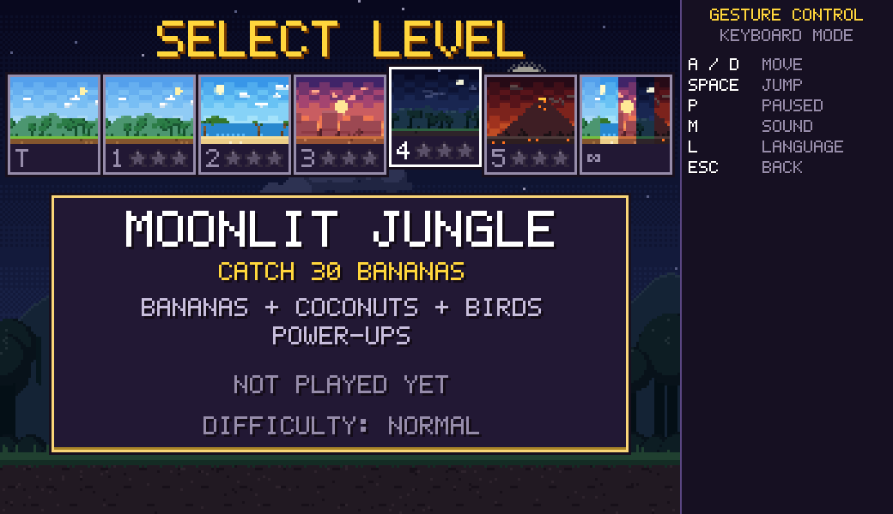
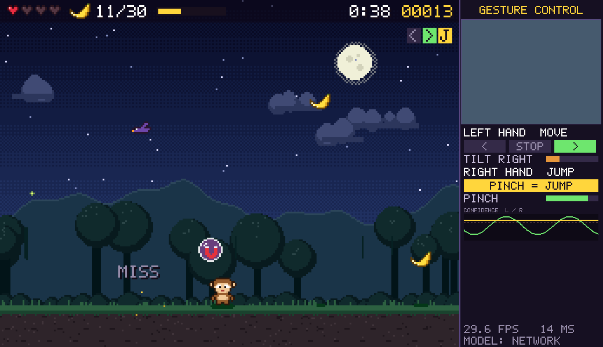
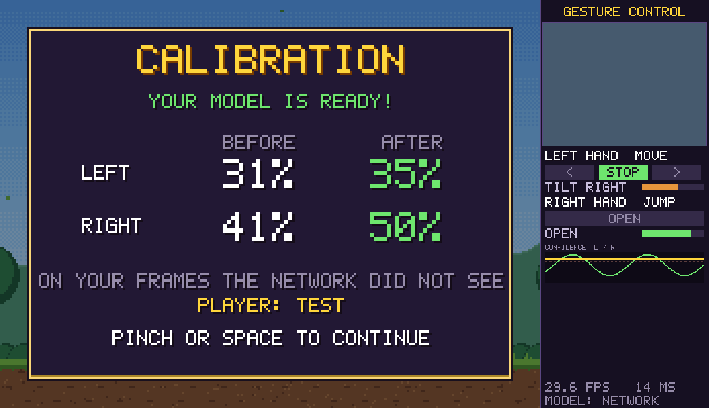
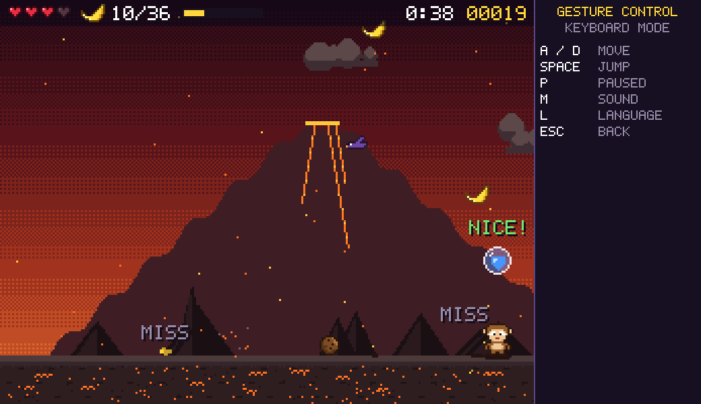

MONKEYBANANA CATCHER
Un videojuego que se controla con las manos.
¿Y si jugaras sin teclado?
La cámara del portátil mira tus manos y una red neuronal convierte tus gestos en controles del juego.
La del portátil. Sin sensores ni guantes.
Reconoce el gesto en cada imagen, unas 30 veces por segundo.
Niveles, tutorial y calibración para cada jugador.
Dos manos, tres gestos
El mono corre a ese lado.
El mono se detiene.
El mono salta.
Cada mano dibujada es la mano promedio de ese gesto en los 28.950 cuadros que grabamos. El texto amarillo es lo que responde nuestra red en ese momento.
De la cámara al salto en 14 ms
Captura tu imagen unas 30 veces por segundo.
Encuentra la mano y marca 21 puntos.
Distancias entre las puntas de los dedos.
Nuestro modelo decide qué gesto es.
10 → 128 → 64 → 2El gesto se vuelve una orden: ¡saltar!
Esta animación usa nuestra red de verdad. Una orden solo cambia si la red está al menos 70 % segura (la línea punteada) en la mayoría de las últimas imágenes.
Mucho más que una demo




Probado con una persona que nunca vio
Lo que aprendimos
- Una red pequeña basta si los datos de entrada son buenos: los 21 puntos de la mano.
- Probar con personas nuevas muestra el rendimiento real del modelo.
- Calibrar con el jugador sube mucho la precisión.
- La misma red funciona en el navegador del celular, sin instalar nada.
¡Ahora, la demo!
Gracias. ¿Preguntas?
Escanea el código y juega con la cámara de tu celular.
▶ Jugar en el navegador